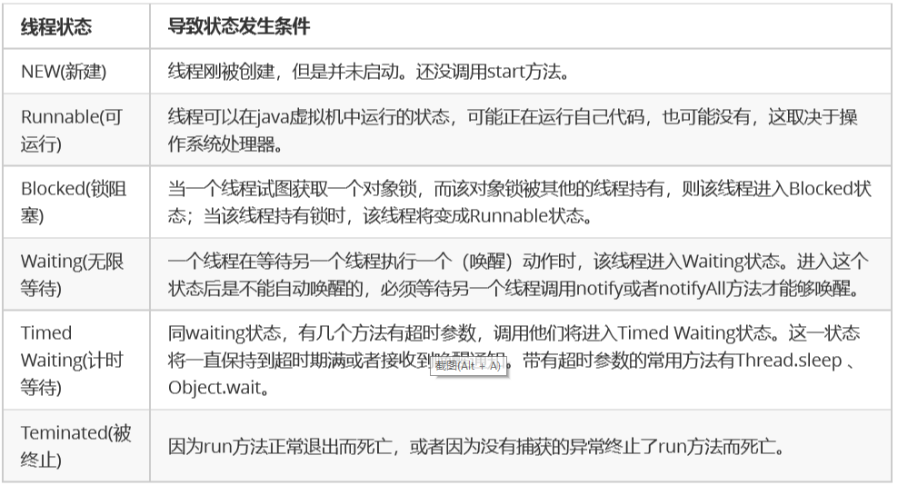
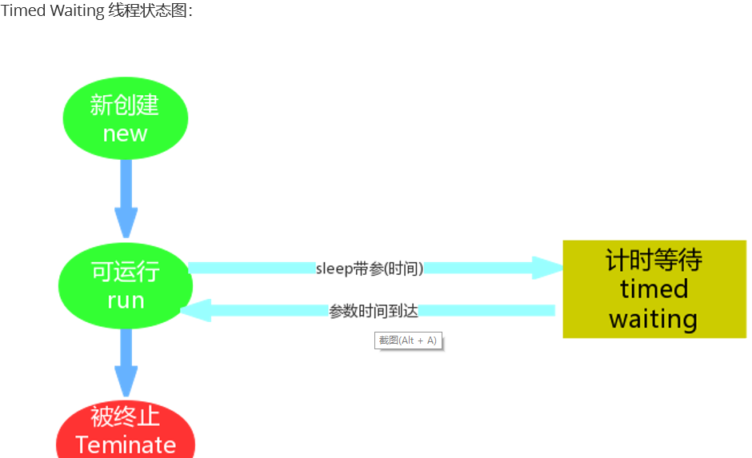
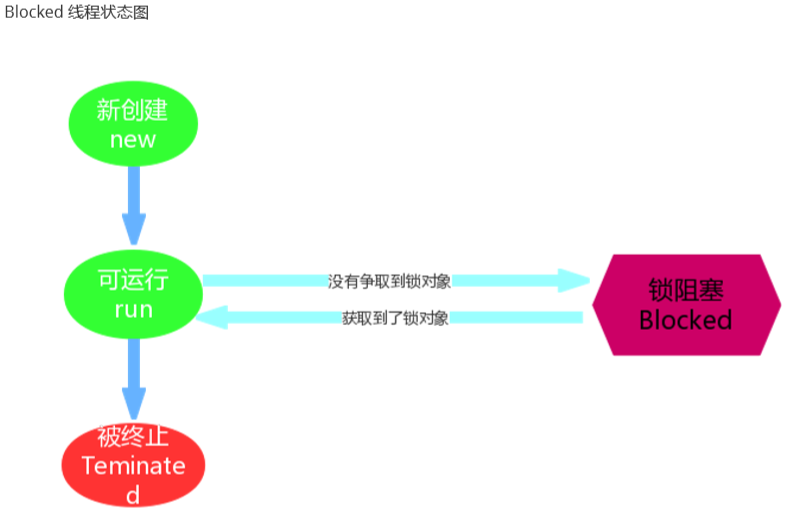
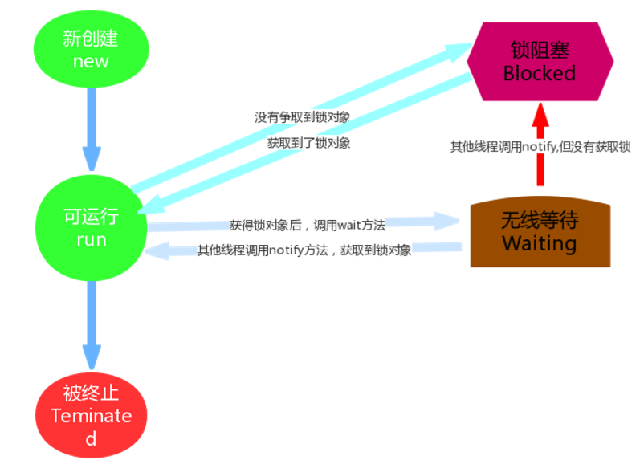
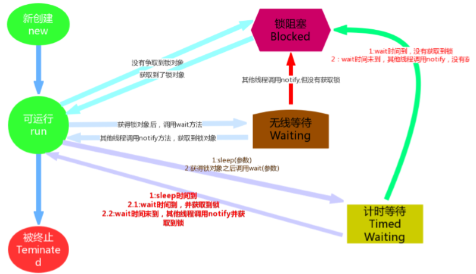

线程状态概述:
当线程被创建并启动以后，它既不是一启动就进入了执行状态，也不是一直处于执行状态。在线程的生命周期中， 有几种状态呢？在API中 java.lang.Thread.State 这个枚举中给出了六种线程状态
Timed Waiting（计时等待）
Timed Waiting在API中的描述为：一个正在限时等待另一个线程执行一个（唤醒）动作的线程处于这一状态
在我们写卖票的案例中，为了减少线程执行太快，现象不明显等问题，我们在run方法中添加了sleep语句，这样就 强制当前正在执行的线程休眠（暂停执行），以“减慢线程”。其实当我们调用了sleep方法之后，当前执行的线程就进入到“休眠状态”，其实就是所谓的Timed Waiting(计时等 待)，那么我们通过一个案例加深对该状态的一个理解。
1 package demosummary.threadstate;
2
3 /**
4 * 实现一个计数器，计数到100，在每个数字之间暂停1秒，每隔10个数字输出一个字符串
5 */
6 public class ThreadState extends Thread {
7 @Override
8 public void run() {
9 for (int i = 1; i < 100; i++) {
10 if (i % 10 == 0) {
11 System.out.println("每隔10个数字输出一个字符串");
12 }
13 System.out.println(i);
14 try {
15 Thread.sleep(1000);
16 } catch (InterruptedException e) {
17 e.printStackTrace();
18 }
19 }
20 }
21
22 public static void main(String[] args) {
23 new ThreadState().start();
24 }
25 } 通过案例可以发现，sleep方法的使用还是很简单的。我们需要记住下面几点：
1. 进入 TIMED_WAITING 状态的一种常见情形是调用的 sleep 方法，单独的线程也可以调用，不一定非要有协 作关系。
2. 为了让其他线程有机会执行，可以将Thread.sleep()的调用放线程run()之内。这样才能保证该线程执行过程 中会睡眠
3. sleep与锁无关，线程睡眠到期自动苏醒，并返回到Runnable（可运行）状态。
tip：sleep()中指定的时间是线程不会运行的最短时间。因此，sleep()方法不能保证该线程睡眠到期后就开始立刻执行
Timed Waiting线程状态图

BLOCKED（锁阻塞）
Blocked状态在API中的介绍为：一个正在阻塞等待一个监视器锁（锁对象）的线程处于这一状态，比如，线程A与线程B代码中使用同一锁，如果线程A获 取到锁，线程A进入到Runnable状态，那么线程B就进入到Blocked锁阻塞状态。
blocked线程状态图

Waiting（无限等待）
Wating状态在API中介绍为：一个正在无限期等待另一个线程执行一个特别的（唤醒）动作的线程处于这一状态
1 package demosummary.threadstate;
2
3 public class ThreadWaiting {
4 public static Object obj = new Object();
5
6 public static void main(String[] args) {
7 new Thread(new Runnable() {
8 @Override
9 public void run() {
10 while (true) {
11 synchronized (obj) {
12 try {
13 System.out.println(Thread.currentThread().getName()+"获取到锁对象,调用wait方法,进入等待状态");
14 obj.wait();
15 //也可以设置等待时间,时间到自动唤醒
16 //obj.wait(3000);
17 } catch (InterruptedException e) {
18 e.printStackTrace();
19 }
20 System.out.println(Thread.currentThread().getName()+"---从waiting状态醒来,继续执行");
21 }
22 }
23 }
24 },"等待线程").start();
25 new Thread(new Runnable() {
26 @Override
27 public void run() {
28 while (true) {
29 try {
30 System.out.println(Thread.currentThread().getName()+"---等待三秒后自动唤醒");
31 Thread.sleep(3000);
32 } catch (InterruptedException e) {
33 e.printStackTrace();
34 }
35
36 synchronized (obj) {
37 System.out.println(Thread.currentThread().getName() + "获取到锁对象,调用notify方法,释放对象");
38 obj.notify();
39 }
40 }
41 }
42 },"等待线程").start();
43 }
44 } 通过上述案例我们会发现，一个调用了某个对象的 Object.wait 方法的线程会等待另一个线程调用此对象的 Object.notify()方法 或 Object.notifyAll()方法。其实waiting状态并不是一个线程的操作，它体现的是多个线程间的通信，可以理解为多个线程之间的协作关系， 多个线程会争取锁，同时相互之间又存在协作关系。就好比在公司里你和你的同事们，你们可能存在晋升时的竞 争，但更多时候你们更多是一起合作以完成某些任务。
当多个线程协作时，比如A，B线程，如果A线程在Runnable（可运行）状态中调用了wait()方法那么A线程就进入 了Waiting（无限等待）状态，同时失去了同步锁。假如这个时候B线程获取到了同步锁，在运行状态中调用了 notify()方法，那么就会将无限等待的A线程唤醒。注意是唤醒，如果获取到锁对象，那么A线程唤醒后就进入 Runnable（可运行）状态；如果没有获取锁对象，那么就进入到Blocked（锁阻塞状态）


我们在翻阅API的时候会发现Timed Waiting（计时等待） 与 Waiting（无限等待） 状态联系还是很紧密的， 比如Waiting（无限等待） 状态中wait方法是空参的，而timed waiting（计时等待） 中wait方法是带参的。 这种带参的方法，其实是一种倒计时操作，相当于我们生活中的小闹钟，我们设定好时间，到时通知，可是 如果提前得到（唤醒）通知，那么设定好时间在通知也就显得多此一举了，那么这种设计方案其实是一举两 得。如果没有得到（唤醒）通知，那么线程就处于Timed Waiting状态,直到倒计时完毕自动醒来；如果在倒 计时期间得到（唤醒）通知，那么线程从Timed Waiting状态立刻唤醒。